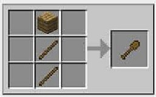

Les pelles dans minecraft
Les différents types de pelles dans minecraft
- Pelles en bois
- Pelles en pierre
- Pelles en fer
- Pelles en or
- Pelles en diamant
- Pelles en netherite
Les pelles (nom anglais : shovels) sont des outils auxiliaires utilisés pour faciliter la collecte de terre, de sable, de gravier, d'argile et de neige.
La recette de construction d'une pelle dans Minecraft est aseez simple, elle consiste à mettre 2 bâtons dans les cases du centre et au centre en bas de l'établi, et puis mettre un matériel au dessus des 2 bâtons